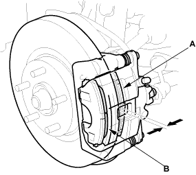
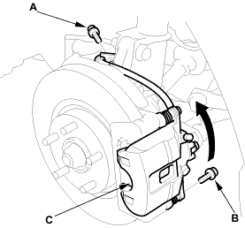
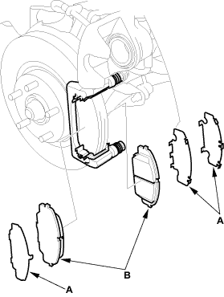

Frequent inhalation of brake pad dust, regardless of material composition, could be hazardous to your health.
|
 CAUTION
CAUTION
Inspection
- Raise the front of the vehicle and make sure it is securely supported. Remove the front wheels.
- Check the thickness of the inner pad (A) and outer pad (B). Do not include the thickness of the backing plate.
Brake pad thickness:
Standard:
9.5 - 10.5 mm (0.37 - 0.41 in.)
Service limit:
1.6 mm (0.06 in.)

- If the brake pad thickness is less than the service limit, replace all the pads as a set.

Replacement
- Remove the brake hose mounting bolt (A).

- Remove the bolt (B), and pivot the caliper (C) up out of the way. Check the hose and pin boots for damage and deterioration.
- Remove the pad shim (A) and pads (B).
